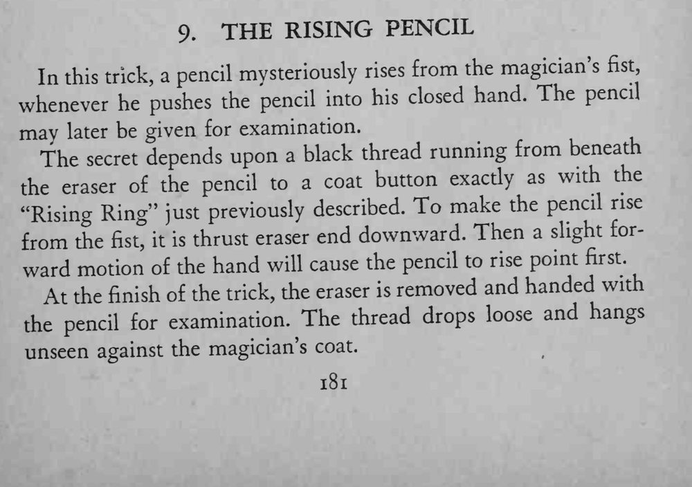

魔术师把铅笔橡皮头朝下按进握拳的手中，铅笔竟自己从拳里缓缓升起；最后铅笔还能交给观众检查。
线要短、绷紧幅度要小，手向前送的动作越轻，铅笔升得越像自己动的。

In this trick, a pencil mysteriously rises from the magician's fist, whenever he pushes the pencil into his closed hand. The pencil may later be given for examination. The depends upon a black thread running from beneath secret the eraser of the pencil to a coat button exacdy as with the "Rising Ring" just previously described. To make the pencil rise from the thrust eraser end downward. Then a slight forfist, it is ward motion of the hand will cause the pencil to rise point first. removed and handed with At the finish of the trick, the eraser is examination. The thread drops loose and hangs the pencil for unseen against the magician's coat.